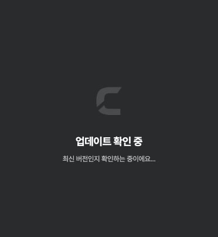
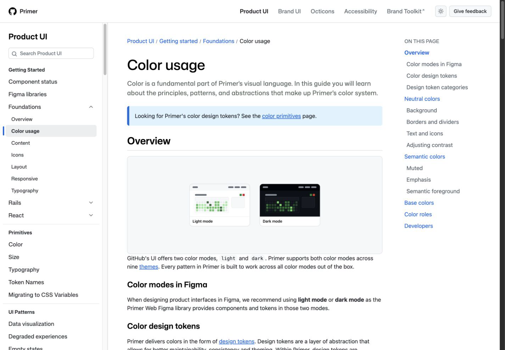
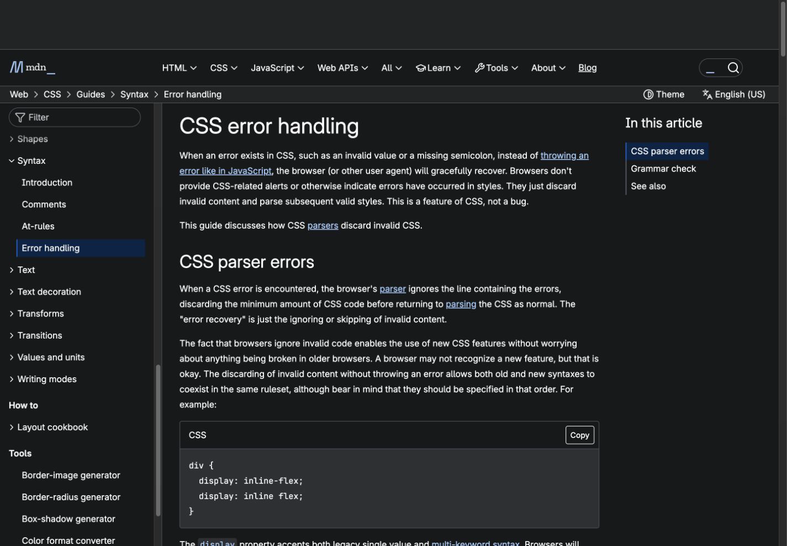
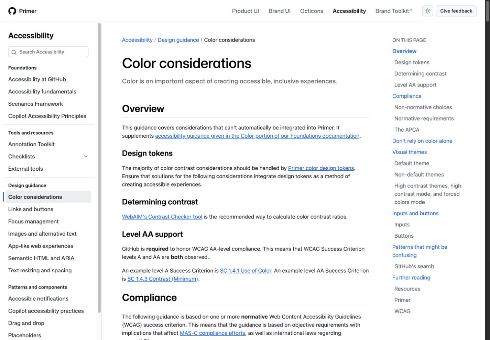

Design Improvement: Mac UI CSS consistency
기존 화면을 재설계하지 않고 semantic theme token을 검색 입력과 Chart.js까지 확장합니다. action·content·badge·interaction·feedback·data visualization 역할을 분리하고, 브라우저가 무시하는 값과 충돌 선언을 제거해 light/dark mode의 위계와 대비를 일치시킵니다.
Lazyweb MCP가 현재 환경에 없어, 로컬 화면과 공식 Primer·MDN 자료로 보완했습니다.
Current State

Improvement Ideas
1. Semantic token을 단일 기준으로 사용하기
SearchInput의 고정 밝은 글자색과 Chart.js의 고정 dark palette를 label,
line, fill, action, content,
badge, interaction, feedback,
dataVisualization token으로 바꿉니다.

raw palette → semantic theme → component label.normal → SearchInput text action.primary → CTA surface interaction.selectionBorder → selected border feedback.success → status text dataVisualization.series → Chart line
2. Invalid value와 충돌 선언 제거하기
backgroundColor: "none"을 transparent로 바꾸고, tracking은
-0.02em으로 명확히 표현합니다. 서로 다른 width와 flex-basis, 즉시 덮어쓰는
background 선언도 하나로 통합합니다.

before: width 32rem + min-width 23rem + basis 23rem after: basis 23rem
3. Light/dark mode에서 같은 대비 유지하기
검색어, placeholder, chart tick, tooltip을 역할별 theme token에 연결해 한 테마에서만 읽히는 색 조합을 없앱니다.

surface: fill.alternative text: label.normal hint: label.alternative action: action.primary
4. Panel geometry를 한 선언으로 결정하기
상점 detail panel과 roadmap preview의 width, basis, background 역할을 하나의 source로 줄이고 내부 scrolling만 허용합니다. 좁은 창에서는 preview를 단일 열로 전환합니다.
What's Working
- startup window의 logo, title, description 위계가 명확합니다.
- semantic theme token 구조가 이미 있어 재설계 없이 정리할 수 있습니다.
- 대부분 rem과 flex/grid를 사용해 desktop window 변화에 대응할 기반이 있습니다.
- dark mode의 background와 neutral surface 구분이 일관된 편입니다.